In 1996, a television studio handed its writers an unusual gift: a tight budget. The team behind Friends responded by locking six actors inside a single apartment, banning every guest star, and letting twenty-two minutes of screen time match twenty-two minutes of story time. The result, The One Where No One’s Ready, became one of the most celebrated half-hours in sitcom history. It also became something its creators never planned: a goldmine for English learners.
This article unpacks a lesson deck titled The One Where We Learn English: Time, Chaos, and 90s Sitcom Vocabulary, part of an Engoo sitcom-English series. The deck opens with a clear promise: “Step inside a classic 1996 television countdown. In exactly 22 minutes, six friends must get dressed for a formal event. We will analyze their chaotic evening to master English idioms, narrative sequencing, and conversational slang.” It should be noted that the deck itself was assembled with AI assistance, and its crisp explanatory sentences — quoted throughout this article — double as models of clear written English. Below, those sentences become vocabulary cards, a scored quiz, tooltips, and a set of practical habits for learners.
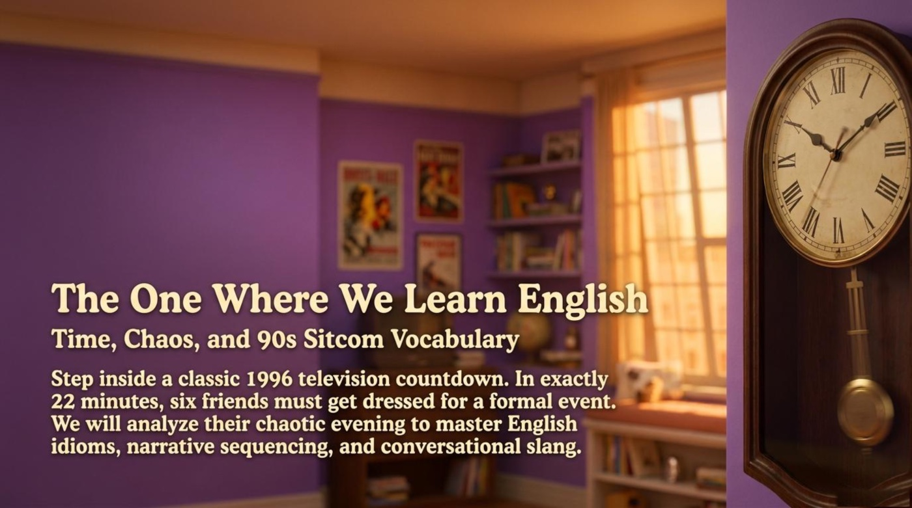
📚 Section 1 · One Apartment, Six Friends, Twenty-Two Minutes
A Money-Saving Format Becomes a Storytelling Masterclass
“Executive Producer Kevin S. Bright designed this episode to save money using a specific TV format known as a bottle episode. One Location: The story never leaves Monica and Rachel’s apartment. No Guest Stars: Only the core cast appears on screen. Real-Time: The 22 minutes of the show perfectly match the 22 minutes the characters have to get ready.”
— the lesson deck, on the format
A bottle episode is the television equivalent of a stage play, and the deck treats the production limitation as the engine of the drama rather than a compromise. With no scene changes and no fresh faces, the script has nowhere to hide, so every joke, pause, and outburst carries extra weight. For language learners this concentration is a genuine advantage. The dialogue never drifts into narration, and every line belongs to an ordinary conversation — contractions, interruptions, and all.
The real-time device deserves special attention. Because the clock on screen matches the clock inside the story, viewers absorb time expressions naturally: seconds to spare, exactly 22 minutes, at 7:40 PM. Notice that the same phrases English uses for work deadlines — running late, we have twenty minutes, hurry up — do all the storytelling here. A practical habit follows directly from this: watch the episode once with subtitles and once without, and each time write down every expression that mentions time.
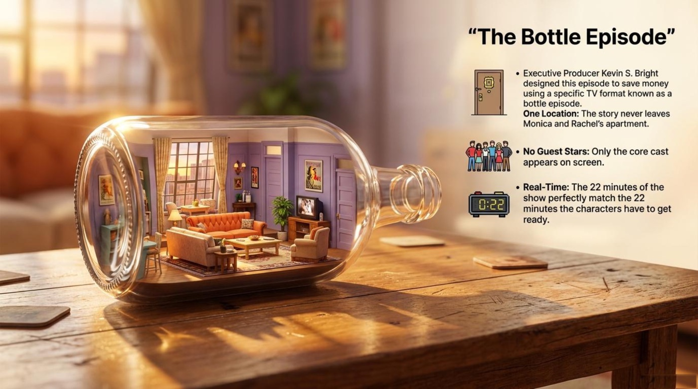
Four Beats, Four Clock Stamps
The deck maps the evening onto a screenplay-style timeline, and every stamp introduces a classic storytelling term. The chain runs from the inciting incident to the climax in four clean steps.
“19:38 — The Inciting Incident: Ross arrives. Everyone has 22 minutes to prepare for his museum function.”
“19:45 — The Distractions: Chandler and Joey fight over a chair. Phoebe gets hummus on her dress.”
“19:50 — The Breakdown: Rachel refuses to go. Monica obsessively hacks her ex-boyfriend’s voicemail.”
“19:55 — The Climax: Ross offers a grand apology, and everyone scrambles to leave with seconds to spare.”
— the lesson deck, the countdown timeline
Interestingly, this timeline is more than a plot summary. It is a ready-made skeleton for narrative sequencing, one of the three skills the deck promises to train. Learners who can name the moment a story starts, the distractions that delay it, the breakdown that threatens it, and the climax that resolves it possess the full architecture of an anecdote. The same architecture powers a meeting recap, a complaint letter, and a late-night story about a missed train.
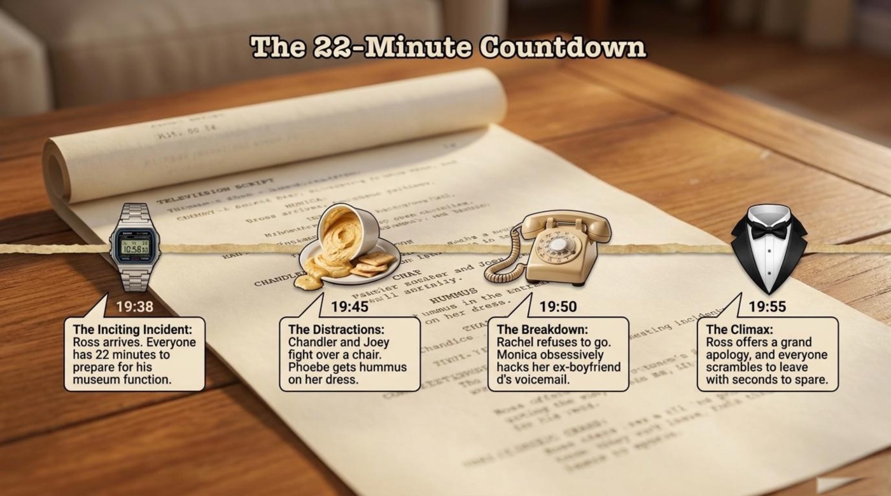
The strongest language lesson on the timeline hides in the deck’s own connectors, which narrate Monica’s escalating disaster in four steps:
“First, Monica hacks into Richard’s voicemail.”
“Then, She hears another woman’s voice on the tape.”
“Consequently, She makes an awkward prank call to Richard’s daughter to investigate.”
“Ultimately, She attempts to erase her mistakes but accidentally replaces his permanent outgoing greeting with her own voice.”
— the lesson deck, the escalation flowchart
These four connectors — first, then, consequently, ultimately — form a complete retelling kit. The deck demonstrates that a chain of small decisions, told with the right connectors, becomes a comedy of errors with a clear cause-and-effect spine. Practical advice: retell yesterday in exactly four sentences, spending one connector per sentence, and the habit of sequencing will transfer to emails, presentations, and interviews.
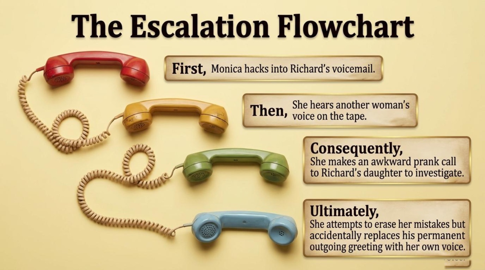
The Group Inertia Matrix: Obstacles and Excuses
Ross carries a single, modest goal — “Leave for the museum function at 7:40 PM.” — and the deck tracks five moving targets standing in his way. The page earns its name from inertia, the physics word for the stubborn reluctance of things — and sitcom characters — to change state.
“Chandler & Joey — Obstacle: Fighting over a seat. Excuse: Someone stole the chair’s essence.”
“Phoebe — Obstacle: Ruined outfit. Excuse: Innocent victim of flying hummus.”
“Monica — Obstacle: Obsessive distraction. Excuse: Needs to know if an answering machine message is old or new.”
“Rachel — Obstacle: Indecision & Anger. Excuse: Nothing looks right, and Ross yelled at her.”
— the lesson deck, the group inertia matrix
Pay attention to the distinction the deck draws between an obstacle and an excuse, because the two words anchor an entire category of workplace English. The obstacle is the real problem standing in the way, while the excuse is the story people tell about it. Phoebe’s ruined dress is an obstacle; calling herself an “innocent victim of flying hummus” is an excuse with comedic decoration. A practical exercise grows straight out of the matrix: describe a recent delay in two sentences, naming the obstacle honestly in the first and the excuse you were tempted to give in the second.
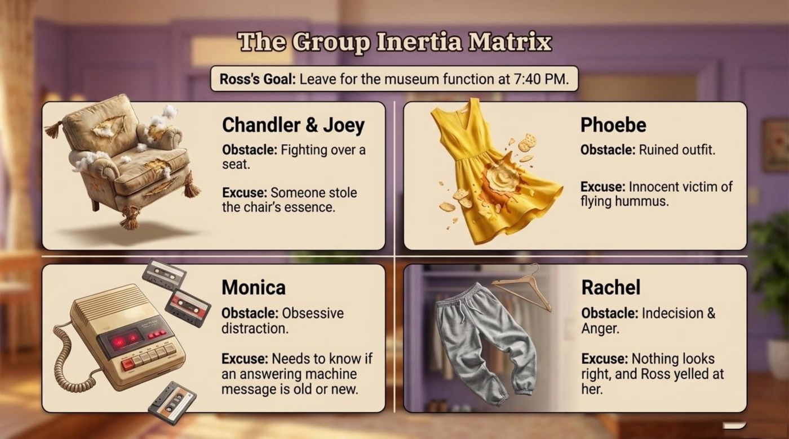
The Anatomy of Revenge: One Prefix, Too Many Clothes
The most quoted visual gag of the evening receives its own anatomy lesson. The deck sets the scene in one line: “Chandler hides Joey’s underwear. In response, Joey does the exact opposite by putting on every piece of clothing Chandler owns.” It then itemizes the resulting tower of fabric with scientific precision.
“Necktie: Tied clumsily over a sweater.”
“Button-down shirt: Layered multiple times.”
“Trousers/Pants: Worn awkwardly over other clothes.”
“Grammar Note: The prefix over- means too much. Joey is severely overdressed.”
— the lesson deck, the anatomy of revenge
🎓 The grammar note is the deck at its best: a slapstick image converted into a durable rule of word-building. The prefix over- multiplies vocabulary from a single root — overreact, oversleep, overthink, overworked, overwhelmed — and every one of those words describes the evening inside the apartment. A learner who collects prefixes instead of isolated words gains a system rather than a list. The advice here is simple: keep a running page of over- words, and add one example sentence per word drawn from your own life.
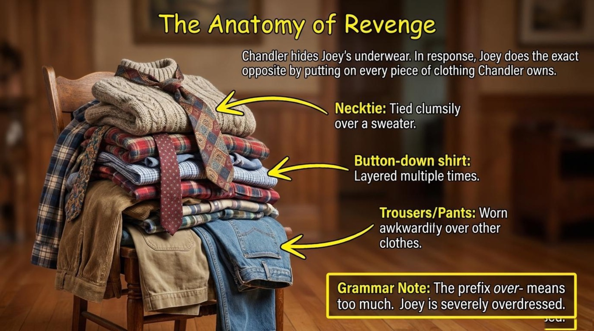
💡 Section 2 · Vocabulary and Language Takeaways
The vocabulary of this lesson falls into four friendly families: television production, idiom and slang, argument and apology, and 1990s technology. Each entry below follows the same route — the literal meaning, the meaning in context, an example quoted from the material, and the deck’s own explanation. Reading the entries first turns the flip-cards at the end of this section into a fast, satisfying self-test rather than a guessing game.
a bottle episode (noun phrase) — Literal meaning: a story sealed inside a “bottle,” meaning a single closed set. Contextual meaning: a money-saving television format built on one location, no guest stars, and often real-time action. From the material: “Executive Producer Kevin S. Bright designed this episode to save money using a specific TV format known as a bottle episode.” The quote presents the format as a deliberate production choice rather than an accident of scheduling. How the material explains it: the deck breaks the term into a three-part checklist — “One Location,” “No Guest Stars,” “Real-Time” — which turns an abstract industry term into three easy rules any viewer can verify while watching.
to go commando (idiom, informal) — Literal meaning: “Belonging to an elite military unit,” as the deck’s literal panel puts it. Figurative meaning: “To wear clothes with no underwear beneath them.” From the material: “I’m not gonna go commando in another man’s fatigues [tuxedo]. — Joey.” Joey’s protest keeps the military flavor alive while he refuses to wear his friend’s formal suit without his usual layers. How the material explains it: the History Note states that the phrase “Originated on American college campuses in the 1970s, but this specific 1996 episode cemented it into global popular vernacular.” One sitcom scene, in other words, pushed a campus slang term into everyday English around the world — a reminder of how much power popular television holds over living language.
Going commando is informal, body-related slang, and it belongs in casual conversation rather than a job interview or an academic essay. Notice the register of everything around you as you learn from sitcoms: the show teaches brilliantly natural spoken English, yet not every phrase belongs in every room. Skilled speakers know both the phrase and its proper setting.
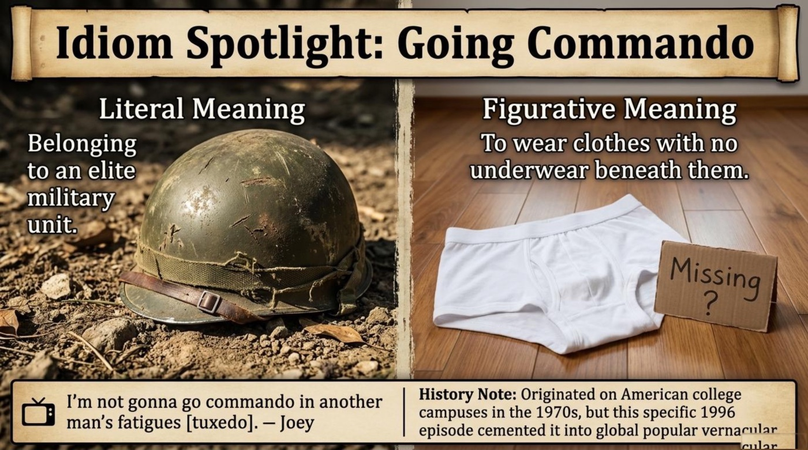
breezy (adjective) — Literal meaning: blown by a light wind. Contextual meaning: “Relaxed, casual, and completely carefree,” in the deck’s exact words. From the material: “Monica leaves a panicked, desperate voicemail for her ex-boyfriend but claims she is just being breezy.” The gap between the panic in her voice and the relaxation she announces is the entire joke. How the material explains it: the Pragmatic Rule quotes Joey — “You can’t say you’re breezy. That totally negates the breezy.” — and then adds the general law: “In English conversation, announcing that you are relaxed usually proves that you are not.” This is pragmatics in action, the branch of linguistics that studies how context bends meaning, and the deck teaches it through a single voicemail.
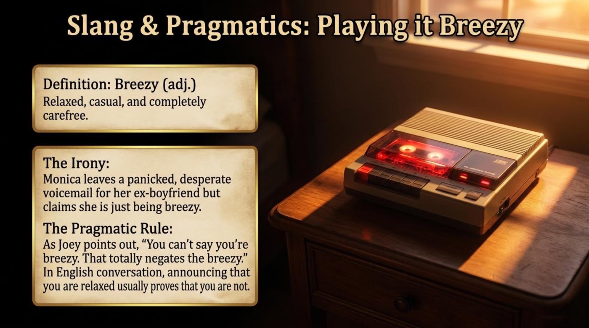
the essence (of the chair) (noun) — Literal meaning: the intrinsic nature of a thing, from the Latin essentia. Contextual meaning: in Chandler’s dramatic theory of furniture, the cushions — the part without which the chair stops being itself. From the material: “Joey takes the cushions because Chandler calls them the essence of the chair—the intrinsic, indispensable quality that makes the chair what it is.” The phrase is simultaneously absurd and perfectly logical, which is precisely why it lands. How the material explains it: the Vocabulary Focus panel defines the word in full philosophical dress, and that formality is the point — the grander the vocabulary, the funnier the sofa. Learners can borrow the pattern for serious use: the essence of the problem, the essence of good manners, the essence of a good apology.
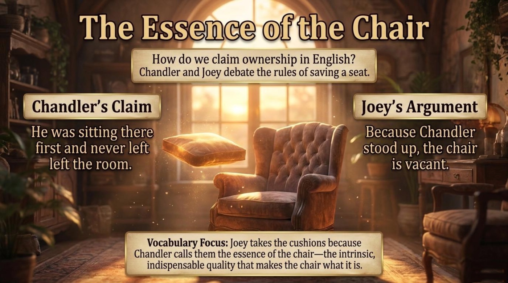
overdressed (and the over- prefix) (adjective) — Literal meaning: dressed too formally or in too many layers, because over- means too much. Contextual meaning: Joey’s entire revenge costume, assembled from another man’s wardrobe. From the material: the deck itemizes a necktie “tied clumsily over a sweater,” a button-down shirt “layered multiple times,” and trousers “worn awkwardly over other clothes.” How the material explains it: the Grammar Note delivers the rule in one breath — “The prefix over- means too much. Joey is severely overdressed.” — and the same rule generates a whole family: overreact, oversleep, overthink, overwhelmed. One prefix, learned through a visual gag, quietly expands a learner’s vocabulary by half a dozen words.
to make it up to someone (phrasal expression) — Literal meaning: to restore a balance that was lost. Contextual meaning: “To do something good to balance out a previous mistake,” the deck’s exact gloss. From the material: “Ross agrees to drink a glass of liquid chicken fat to prove his devotion.” Drinking the fat is Ross’s chosen repayment for yelling at Rachel, and the disgust of the gesture is proportional to the size of the offense. How the material explains it: the deck labels it the Key Phrase of the climax, which signals that learners should memorize it as a chunk. It is a politeness essential: I will make it up to you works in emails, relationships, and apologies of every size.
an inciting incident (noun, storytelling term) — Literal meaning: the event that sets a plot in motion. Contextual meaning: Ross’s arrival at 19:38, the moment the twenty-two-minute clock starts. From the material: “The Inciting Incident: Ross arrives. Everyone has 22 minutes to prepare for his museum function.” The stamp gives the evening its official starting line. How the material explains it: the timeline pairs the term with three companions — distractions, breakdown, climax — giving learners a complete story arc with named parts. Retelling any event with these four labels trains the storytelling muscle that interviews and presentations quietly demand.
90s phone technology (topic vocabulary set) — Literal meaning: a small museum of gadgets that now confuse younger viewers. Contextual meaning: the machinery behind Monica’s entire downfall. From the material: the deck defines four devices in a single panel — “Answering Machine: A physical device that records voice messages on cassette tapes (the ancestor of digital voicemail).” “Beep In: The act of dialing a secret code from a remote phone to listen to your messages.” “Outgoing Message: The pre-recorded greeting a caller hears before they leave a message.” “Caller ID: A separate electronic box that displays the phone number of the person calling you.” How the material explains it: the definitions pair every object with its modern descendant, which is the smartest possible memory hook. Practical advice: collect obsolete-tech words in one list, because they survive inside modern phrases such as hang up, dial a number, and leave a message long after the hardware disappears.
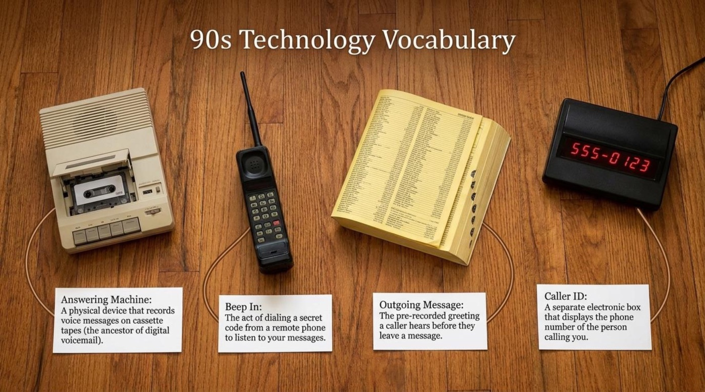
Interactive Flip-Cards: The Six Star Terms
The six star terms of the lesson are collected below as flip-cards. Tap or click any card to reveal its literal meaning, its meaning in context, an example from the material, and a short note on why the term matters. The gold button turns the whole set at once, and keyboard users can tab to a card and press Enter or Space to flip it.
📌 Section 3 · Deeper Meaning: Metaphors and Symbols
Beyond the jokes, the deck builds its pages around four objects that quietly carry the theme of the lesson: communication under pressure. Each object starts as a prop and ends as a symbol, and reading them on that second level is what separates casual watching from genuine comprehension. The four symbols also give learners a portable set of images for talking about their own lives in English.
The Bottle — Creativity Under Constraint
The deck’s cover image for the format shows the entire apartment sealed inside a glass bottle, and the picture is more literal than it first appears. The defining rule — “One Location: The story never leaves Monica and Rachel’s apartment” — turns the set into a closed container where pressure has nowhere to escape. Significance follows immediately: constraint is not the enemy of creativity but its engine, because every limitation forces the writers to invent rather than escape. Learners work inside their own bottles every day, and the lesson reframes those limits as advantages. One textbook, ten minutes a day, and a single podcast become a pressure cooker for focused practice rather than a list of excuses for skipping it.
The Chair — The Invisible Rules of Ownership
The chair fight looks trivial, and the deck treats it as a constitutional crisis on purpose. Chandler’s position rests on settlement history: “He was sitting there first and never left the room.” Joey’s position rests on property law: “Because Chandler stood up, the chair is vacant.” Two coherent legal systems collide over one cushion, and neither side doubts its own logic for a second. The symbol teaches that ownership in English lives in small, everyday phrases — save my seat, it’s taken, I was here first — that carry invisible cultural rules. The deck’s Vocabulary Focus completes the picture by naming the stakes: the cushions represent “the intrinsic, indispensable quality that makes the chair what it is,” which is why removing them feels, to Chandler, like theft of the chair’s very identity. Anyone who has ever argued about a reserved gym machine or a café table already speaks this language fluently.
The Answering Machine — Anxiety You Can Replay
Every panic in Monica’s storyline travels through one beige box, which makes the answering machine the episode’s true antagonist. The matrix nails her obsession in a single excuse — “Needs to know if an answering machine message is old or new” — and the escalation flowchart ends in catastrophe: “Ultimately, She attempts to erase her mistakes but accidentally replaces his permanent outgoing greeting with her own voice.” The device symbolizes a modern anxiety that learners will recognize instantly: recorded words become evidence, and evidence refuses to disappear. An outgoing message that was meant to announce availability ends up broadcasting Monica’s voice permanently. The language takeaway is tone management — think, breathe, and plan a message before recording it, because the machine keeps exactly what it hears. Every modern message you regret sending lives in the same family tree.
The Glass of Chicken Fat — The Price of a Sincere Apology
The climax converts apology into performance art. The deck sets up the stakes: “Ross snaps and yells at Rachel. To save his relationship, he must make a grand gesture.” It then names the key phrase and shows the gesture in full:
“Key Phrase: To make it up to someone (To do something good to balance out a previous mistake).”
“The Gesture: Ross agrees to drink a glass of liquid chicken fat to prove his devotion. Overwhelmed by the depth of his apology, Rachel forgives him and gets dressed in a record five seconds.”
— the lesson deck, the climax and resolution
A grand gesture works as a symbol because it costs the apologizer something visible. Words alone would have bounced off Rachel’s anger; a glass of liquid chicken fat cannot be faked, which is precisely why it lands. The scene also resolves the entire evening in one comic stroke — Rachel, suddenly inspired, gets dressed “in a record five seconds,” dissolving the twenty-two-minute crisis. Remember that apologies in English follow the same economics in real life: small repairs for small injuries, dramatic repayment for dramatic ones, and the phrase to make it up to someone ready for both.
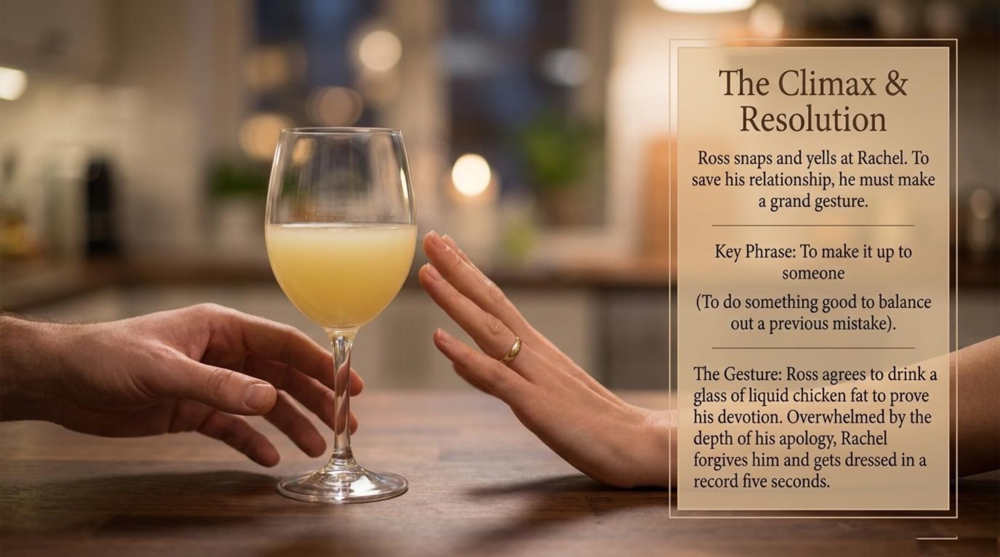
📌 Section 4 · Comprehension Check
The quiz below gathers eight questions drawn directly from the material, mixing comprehension, vocabulary in context, true-or-false items, and a fill-in-the-blank. Choose an answer and the page responds instantly: the correct option turns green, a wrong pick shakes and turns red, and a short explanation appears beneath the question. The score counter and the row of progress dots track the journey from first tap to final result, and a floating word of applause or a gentle buzz marks every step. The deck’s own pages work the same way on paper — a true-or-false board and a short-answer notepad — and this version simply makes the feedback immediate. A perfect run earns a round of applause, and the Watch it again button resets the board for another attempt.
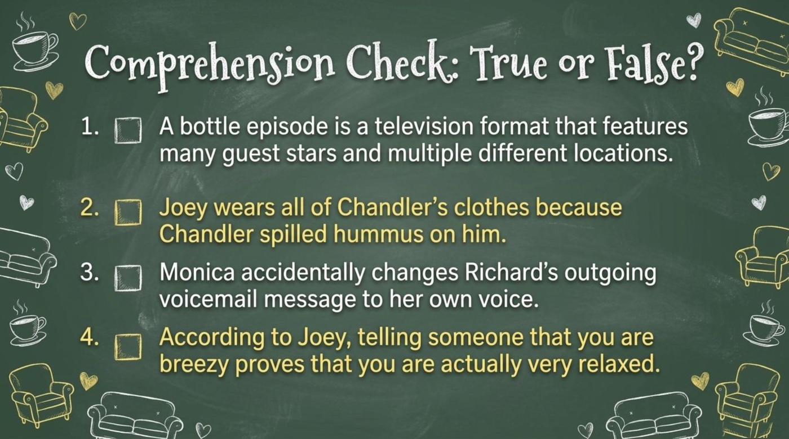
The deck’s answer page settles the score with a corkboard of sticky notes: “1. False (One set, no guest stars).” “2. False (He does it for revenge because Chandler hid his underwear).” “3. True.” “4. False (It negates the breezy).” The short-answer key follows the same spirit with four crisp verdicts — “Going commando,” “The essence,” “A glass of chicken fat,” “The answering machine.” Self-testing with the answers pinned nearby converts a private guess into a small moment of feedback, and those tiny moments are exactly how memory consolidates. Finish the interactive round, scroll back to any explanation that surprised you, and let the second attempt be faster than the first.
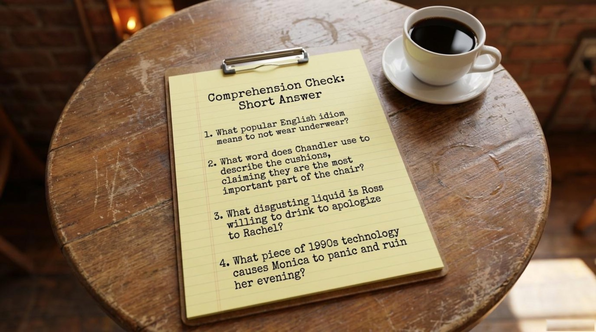
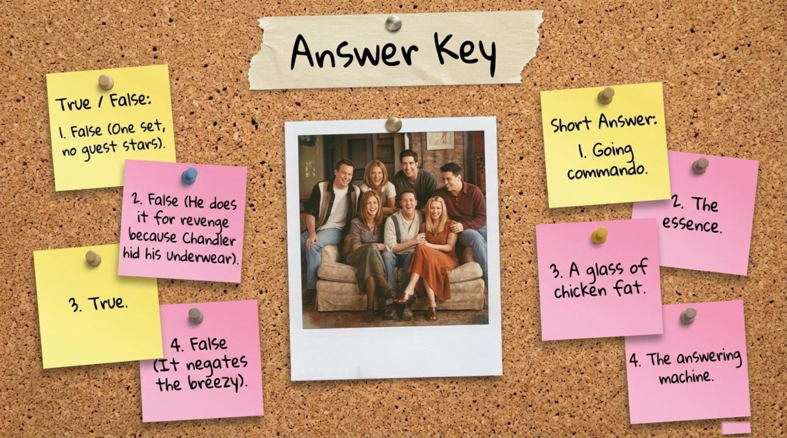
💡 The Door Left Open
The final page of the deck refuses to end the lesson, and instead leaves a purple door standing open. Its instruction is the quote this article wants to leave ringing: “Practice your new vocabulary by discussing these questions with a partner or writing your answers in a journal.” The three prompts behind that door map perfectly onto the evening’s three disasters. The communication prompt invites a story of a message gone wrong, Monica-style. The conflict prompt asks for a verdict in the great chair debate — first arrival against standing up. The pressure prompt requests a personal strategy for a deadline that allows exactly twenty-two minutes of preparation.
The main takeaway fits in one sentence and echoes the deck from beginning to end: English is not a list of words but a set of situations, and a well-chosen sitcom episode is a situations laboratory disguised as entertainment. One apartment produced a production term, an idiom with military roots, a law of pragmatics, a prefix family, a story arc, and an apology philosophy. The call to action is equally concrete. Rewatch The One Where No One’s Ready with fresh eyes, retell it in four sentences using first, then, consequently, and ultimately, replay the quiz above until a perfect score feels almost boring, and write one journal paragraph that uses at least three of the six star terms. The purple door stays open for exactly that kind of practice.
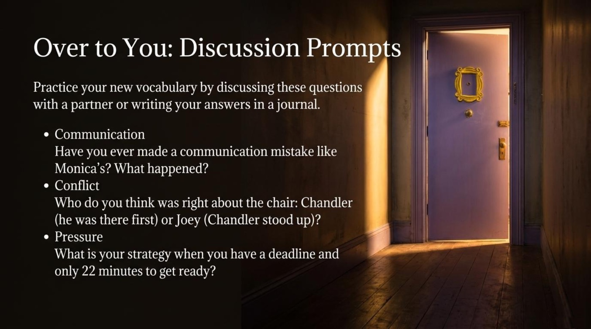